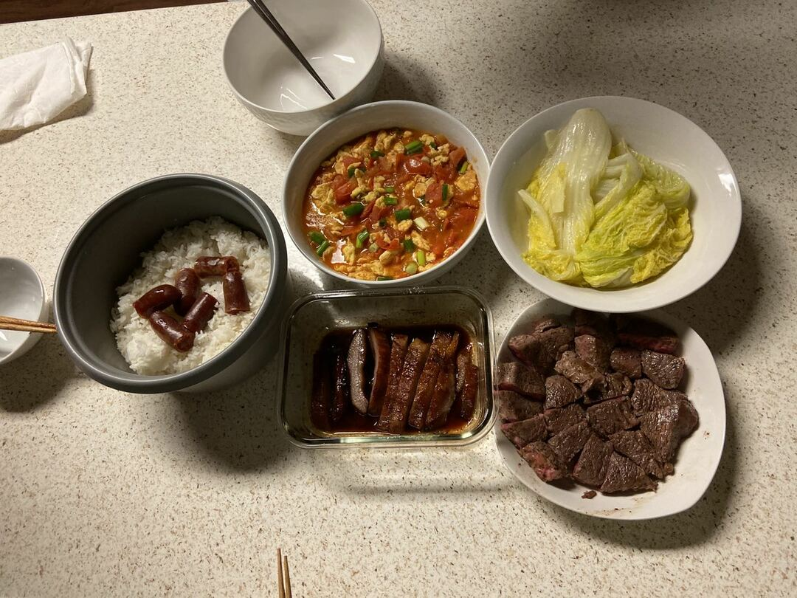
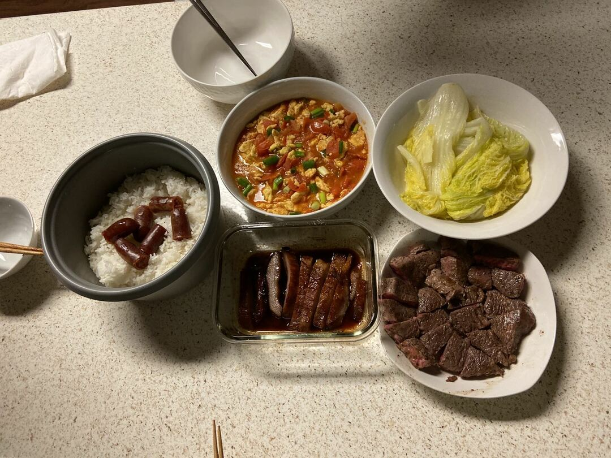

Mingcong Wu
Onions, garlic, sausage, and bell peppers are the ingredients to a hearty meal of breakfast omelette. You can learn a lot about a nation by looking at its diet. Cooking to me is more than just a routine, but an art that I aspire to perfect. In spite of my ability to reverse-engineer the meals I eat at restaurants, I did not grow up as the cook of the family. I was introduced to this craft out of necessity when I moved to a boarding school. Little did I know that the initial steps I took to survive will become a passion that I cherish. I started out boiling hot water for the generic packages of blend instant noodles. Knowing that I need to diversify my repertoire of recipes, I started to pay attention to cookbooks, culinary websites, and the food channels for new ideas. My preference for spicy food propelled me to experiment with Mexican and Indian cuisines. From creating my own spicy salsa dippings to cooking a pot full of flavorful curry, every entree is an opportunity for me to deepen my knowledge of culinary art and culture. My signature move is to sprinkle chili powder on every dish for an extra kick of flavor. Learning about the regional differences of food within every culture also enabled me to deepen my understanding of history.
My talent is a lifelong passion in the sense that I get to practice it on a daily basis. Whenever there is a special event for Key Club, International Club, or Band, I would be the first to volunteer as the cater. Making and sharing food with others has allowed me to branch out by socializing with people that were unfamiliar before. As I enter college, I intend to continue my craft by learning about cooking and sharing it with others as much as possible. Eventually, I met some friends in UCR and got a chance to cook in my spare time. During weekends, I would go to their apartment and cook meals for everyone.
My goal is to have my own restaurant in the future. However, in order to operate a restaurant, I not only have to have good cooking skills, but also the correct methods to manage the restaurant. Therefore, I decided to apply for the Business Administration major in UCR. Last quarter was my first quarter in UCR, and I hope I can learn more skills and achieve my goal in the future.
Experience
AFE Tutor
• Help teachers in my high school to grade homework
• Answer students quetion
Volunteer
• Help people sign up for summer reading program
• Organize books on shelves
• Answer people's questions
Education
UC Riverside
Portfolio

First Time Cooking at UCR

Thanksgiving

Cooking at Big Bear During Winter Break

Cooking at Chinese New Year
First Time Cooking at UCR

Thanksgiving
Cooking at Big Bear During Winter Break
Cooking at Chinese New Year